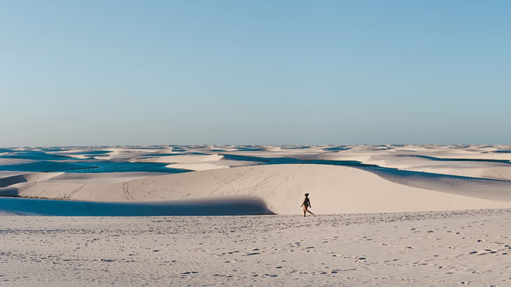
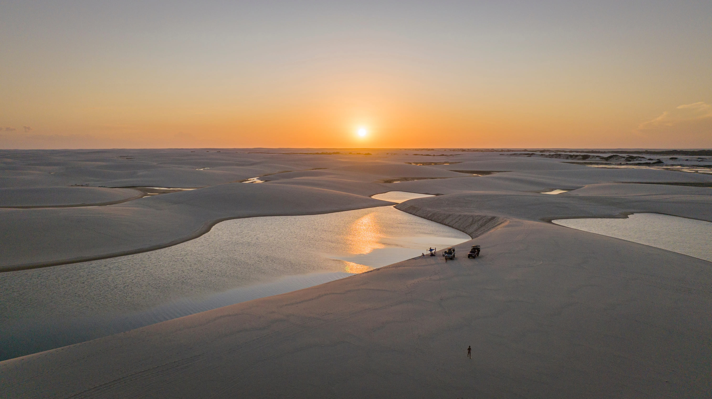
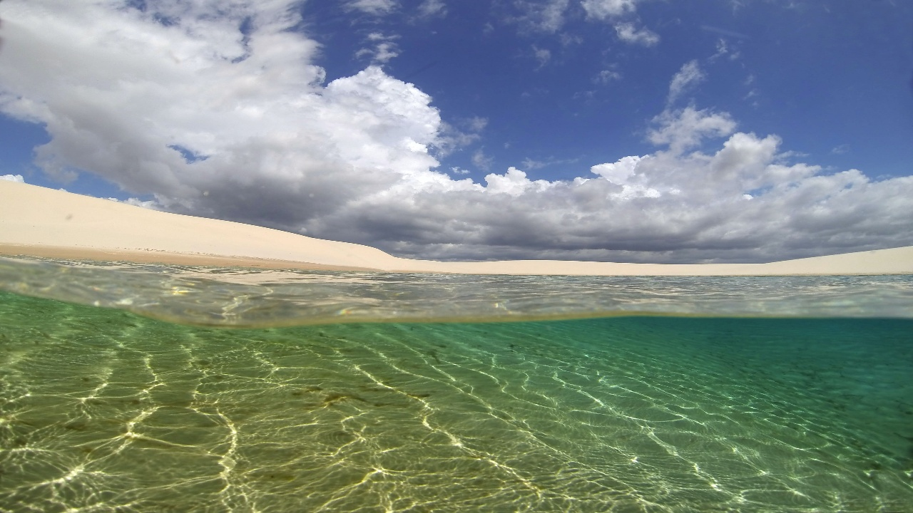
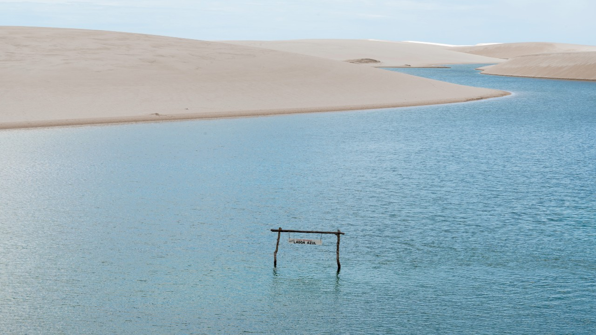
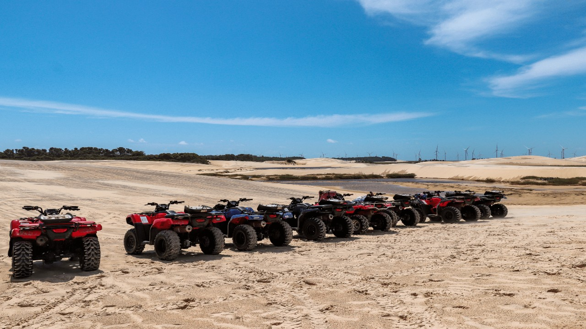

Bate e volta Atins e Canto do Atins
Partiremos de São Luís em direção a Barreirinhas entre 02h50 e 3h20 da manhã, em veículo sedan, van ou micro-ônibus. Os horários de embarque serão comunicados no dia anterior à viagem. Após o último embarque, a jornada terá uma duração aproximada de 4 horas, com uma breve parada no supermercado, para adquirir água e lanc...
Continue lendo.Bate e volta Lagoa Bonita e Pôr do Sol
Partida matinal, entre 06h30 e 08h00, veículo sedan, van ou micro-ônibus com embarque direto no seu hotel. A jornada de São Luís para Barreirinhas terá uma duração de cerca de 4 horas, com uma breve parada no supermercado, para adquirir água e lanc...
Continue lendo.Bate e volta 2 lagoas (azul ou prata e Lagoa Bonita c/ Pôr do sol)
Inicie sua jornada matinal entre 02h50 e 03h20, com embarque diretamente do hotel em em veículo sedan, van ou microônibus., rumo a Barreirinhas. A viagem a partir de São Luís terá uma duração de cerca de 4 horas, com uma breve parada no supermercado, para adquirir água e lanc...
Continue lendo.Bate e volta Lagoa Azul ou Lagoa da Prata
Prepare-se para uma jornada emocionante pelos Lençóis Maranhenses! Embarque entre 2h50 e 3h20 em veículo sedan, van ou microônibus. A viagem de São Luís para Barreirinhas terá uma duração aproximada de 4 horas, com uma breve parada no supermercado, para adquirir água e lanc...
Continue lendo.Bate e volta quadriciclo
Iniciaremos nossa jornada de São Luís a Barreirinhas com Embarque entre 2h50 e 3h20 em veículo sedan, van ou microônibus. Após o último embarque, a viagem terá uma duração de aproximadamente 4 horas, com uma breve parada no supermercado, para adquirir água e lanc...
Continue lendo.Bate e volta Santo Amaro

Iniciaremos nossa jornada de São Luís a Barreirinhas com Embarque entre 2h50 e 3h20 em veículo sedan, van ou microônibus. Após o último embarque, a viagem terá uma duração de aproximadamente 4 horas, com uma breve parada no supermercado, para adquirir água e lanc...
Continue lendo.Bate e volta Caburé (Rio Preguiças)

Iniciaremos nossa jornada de São Luís a Barreirinhas com Embarque entre 2h50 e 3h20 em veículo sedan, van ou microônibus. Após o último embarque, a viagem terá uma duração de aproximadamente 4 horas, com uma breve parada no supermercado, para adquirir água e lanc...
Continue lendo.